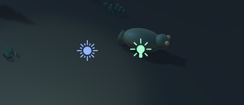
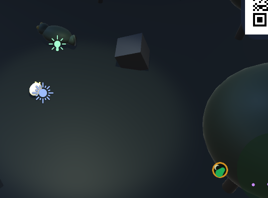

1. 全体像何のゲームで、誰がどう遊ぶのか
カメレオンナイトは、暗い夜のジャングルを舞台にした、2人で遊ぶ協力ゲームです。専門店などでの展示・体験を想定しています。
2つの役割
| 役割 | 操作する人 | やること |
|---|---|---|
| メイン(カメレオン) | キーボード(展示ではセンサーなどに置き換え予定) | 逃げ回る。攻撃手段はない。 |
| 灯り役(協力プレイヤー) | スマホ(傾き/タッチ)。無い時はマウス | 懐中電灯を動かし、敵に光を当て続けて倒す。 |
面白さの核: 「1人では戦えない」ので、2人の息が合わないと勝てません。灯り役は1体に狙いを定め続ける必要があり(逸らすと敵が回復する)、メイン役は敵を灯りの範囲に誘導するように逃げます。観ている人にも役割が分かりやすく、展示向きです。
3つの作業場所
| 場所 | 中身 | 役割 |
|---|---|---|
mockup/ | ブラウザで動くHTML試作3種 | アイデアと遊びの検証。作り直しが速い。 |
Assets/ | Unityのゲーム本体 | 展示で実際に使うもの。 |
docs/ | このページ | 状況の整理と説明用。 |

2. HTMLモックアップ3種なぜ先にHTMLで作ったのか、それぞれ何を試したのか
Unityは起動・ビルドに時間がかかるため、遊びのアイデアはまずブラウザ(three.js)で素早く試作しました。ファイルを開くだけで動くので、他の人にも見せやすい利点があります。
| ファイル | コンセプト | 試したこと |
|---|---|---|
chameleon-3d.html | 擬態するステルス | 止まると周囲の色に溶け込み、動くと目立つ。見つかり具合を表す「発見ゲージ」、ライフ3、ミニマップ、効果音。 |
maze3d.html | 迷路×非対称対戦 | 圧力マット役(メイン)とスマホ傾き役(サーチライトで妨害)の対戦。一本道だと詰むため、迷路に抜け道(ループ)を追加。当たり判定を軸ごとにスライドさせる方式に修正。 |
chameleon-survivor.html | 協力サバイバー | メインは逃げるだけ、灯り役が敵を焼き払う。時間で敵が増える。Unity版の元になった試作。 |
maze3d.html と chameleon-survivor.html は現時点でGitにはコミットしていません。GitHubに上がっているのは chameleon-3d.html のみです。
3. サバイバーのルールと数値「どういう仕組みで倒すの?」に答えるための詳細
倒し方(ダウンゲージ)
- 敵は光の円(半径2.4)の中にいて、かつプレイヤーから1.6より離れている間だけ、体力(ダウンゲージ)が減ります。
- 光を外すと、ゲージは自然回復します。だから1体に当て続ける必要があります。
- ゲージが0になると、敵は縮みながら浮いて消え、撃破数が1増えます。
なぜ「プレイヤーの近くには光が効かない」のか: これが無いと、灯りをプレイヤーの真上に置きっぱなしにするだけで、寄ってきた敵が全部焼けてしまいます。その必勝法を構造的に無効にするための調整です(HTML試作のコメントにも同じ意図が書かれています)。
敵の種類
| 種類 | 速さ | 接触ダメージ/秒 | ダウン体力 | 光での減少/秒 | 回復/秒 | 特徴 |
|---|---|---|---|---|---|---|
| 蛾(moth) | 2.6 | 10 | 34 | 44 | 16 | 小さく速い。すぐ倒せるが数が多い。 |
| 大型(brute) | 1.5 | 22 | 110 | 38 | 20 | 遅いが硬く、痛い。 |
| 突進(dasher) | 2.0 | 16 | 45 | 44 | 18 | ギミック: 0.6秒その場で黄色く光り(予告)、一直線に突進(0.45秒・速さ9)。約8秒後から出現。 |
| 光避け(skulker) | 2.9 | 12 | 36 | 50 | 22 | ギミック: 光が近づくと逃げる。壁際や角に追い詰めて当てる必要がある。約20秒後から出現。 |
| 分裂(splitter) | 1.9 | 14 | 80 | 40 | 18 | ギミック: 倒すと小さな蛾が2体飛び出す。約14秒後から出現。 |
時間で難しくなる仕組み
- 出現間隔 =
max(0.3, 1.5 − 経過秒 × 0.06)秒。開始直後は1.5秒ごと、約20秒で下限0.3秒になります(HTML試作より大幅に速い設定)。 - 大型が出る確率 =
min(0.3, 0.04 + 経過秒 × 0.012)。最初は4%、約22秒で30%(上限)。突進・分裂・光避けは、それぞれ一定時間が経ってから、少しずつ混ざり始めます。 - 敵はプレイヤーの周囲15〜18の距離にランダムに出現します。画面内の敵は最大45体で、増えすぎて画面が騒がしくならないようにしています。
プレイヤー側
- HP 100。敵に触れる(距離0.9未満)と、重なっている敵の中で最大の接触ダメージだけを毎秒受けます(合算ではありません)。さらにダメージ倍率2.2をかけていて、HTML試作より短時間で倒されます。
- 移動速度 5.6。移動できる範囲は中心から±19。
- HPが0でゲームオーバー。制限時間はなしで、生き残った時間を競います。ダメージ倍率と敵の増え方を上げることで、早めに決着がつく設計にしています(展示の回転を上げるため)。
- ベストの生存時間と撃破数は端末に保存されます。
4. 技術のしくみスマホ連携・シーン生成・当たり判定・カメラ・UI
スマホ連携(どうやって繋がるのか)
- Unityゲームが起動すると、PC上に小さなWebサーバー(HTTP:8787 / HTTPS:8788)が立ちます。
PointerServer.csが担当します。 - 画面右上に、そのURLのQRコードが出ます。同じWi-Fiのスマホで読み取ると、専用ページが開きます。
- スマホは指の位置(タッチ)または端末の傾きを、画面上の位置(0〜1の座標)に直して、約20回/秒でPCに送ります。
- Unity側は、その座標から画面にレイを飛ばし、地面に当たった位置を懐中電灯の狙いにします(
FlashlightController.cs)。 - スマホが繋がっていなければ、マウスの位置を使います。HUDに「スマホ操作中/マウス操作中」と出ます。
シーンの作り方(なぜボタンを押す必要があるのか)
このプロジェクトは、地面・木・岩・プレイヤーなどを手で配置していません。メニュー ChameleonNight › Build Survivor Scene が、SurvivorSceneBuilder.cs の命令どおりに一括生成し、ChameleonSurvivor.unity として保存します。コードを変えたら、もう一度ボタンを押さないと反映されないのはそのためです。
見た目の部品(球・コーン・パネル・ロゴ・QR)も、画像ファイルを使わずコードで生成しています。既存プロトタイプから続く方針で、素材の管理が要らない代わりに、見た目は簡素です。
当たり判定(なぜ木を通り抜けなくなったのか)
Unityの物理エンジンは使わず、木・岩などを円として登録し(SurvivorObstacle.cs)、プレイヤーと敵が動いた後に「円にめり込んでいたら外へ押し出す」方式です。軽く、動きも滑らかです。最初は木の幹だけを当たり判定にしていたため、樹冠の下を通れて「貫通」に見えました。今は樹冠まで含めて拡大しています。
カメラと左右の向き
- カメラは斜め上(0,8,8)から、常にプレイヤーを画面中心にして追従します(
SurvivorCameraFollow.cs)。 - A/Dが逆になった理由: HTML試作(three.js)は右手座標系、Unityは左手座標系のためです。同じ符号だと左右が反転するので、Unity側でX方向の符号を反転させました。
UIと明るさ設定
- 画面表示はUnity標準の即時描画(OnGUI)で作り、角丸パネルやロゴは
UITextureFactory.csが生成します。 - 配色は「夜の緑×灯りの金」を基本色として統一しています。
- Escのポーズ画面に、画面の明るさスライダー(×0.2〜×5)があります。環境光と月明かりの強さに倍率をかけるだけの、開発者向け設定です。設定値は保存されます。
素材
- 木・岩・草などは Kenney Nature Kit(CC0=著作権フリー、商用可、表記不要)。
Assets/Models/KenneyNature/にFBX 329点とライセンス文を置いています。 - 主人公・敵は現在球とコーンの簡易モデル。主人公はTripo AIで作る予定です。
5. Unityの操作手順どのメニュー・ボタンを押すのか
- Unityでプロジェクトを開く
Unity Hubでchameleon-night-prototypeを開きます。エディタは1つだけにしてください。 - メニューからシーンを作る
上部メニューのChameleonNight→Build Survivor Sceneを押します。Consoleに「survivor scene built at Assets/Scenes/ChameleonSurvivor.unity」と出れば成功です。 - シーンを開く
下のProjectパネルでAssets › Scenes › ChameleonSurvivorをダブルクリックします。 - Playする
画面上部中央の▶ボタンを押します。タイトル画面で Enter / Space / クリック、または「はじめる」で開始です。 - Gameビューで確認する
Gameタブに映ります。電球や太陽のマークが出る場合は、Gameタブ右上の Gizmos ボタンをOFFにします。
ゲーム中の操作
| 操作 | 内容 |
|---|---|
| WASD / 矢印 | メインプレイヤーの移動 |
| マウス | 灯り(スマホ未接続時) |
| スマホ | 右上のQRを読み取って接続。タッチまたは傾きで灯りを操作 |
| Esc | ポーズ。画面の明るさ調整、再開、最初からやり直し |
| R | ゲームオーバー後のやり直し |

6. 起きた問題と原因・対処「あれ、なんでこうなったの?」の答え
7. 想定問答聞かれそうな質問と、答え方の例
8. 現在の状況と次にやることできたこと・確認待ち・未着手
やることリスト
「誰が」「何を」するかで分けています。上から順に進めるのがおすすめです。
9. やったことの履歴時系列
10. ファイルの場所どのファイルが何をしているか
11. このページの更新方法いつでも更新できます
Claude Codeに「docs/project-overview.html を更新して」と伝えれば、その時点までの作業を反映します。
手で直す場合は、このファイル末尾の <script> 内にある UPDATED / STATUS / HISTORY / FILES / TROUBLES / QA を編集してください。1行=1項目で、表示は自動で組み立てられます。
URLの末尾に #tech のように付けると、そのテーマを開いた状態で共有できます。